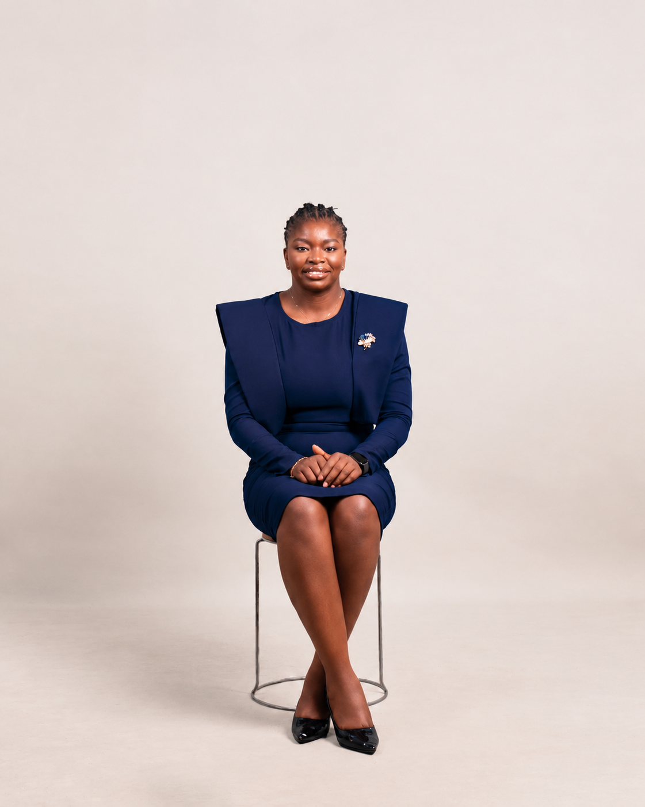

Prophet | Minister | Author | Leader | Creative | Entrepreneur | Mentor | Realtor

Healings Erhuvwuigho Azuike is a prophet, minister, author, leader, creative, entrepreneur, mentor and Realtor committed to building people, developing purposeful platforms and helping individuals grow into God’s design for their lives.
Through ministry, writing, mentorship, leadership, creative expression and enterprise, she is committed to raising people, strengthening families and building structures that create meaningful impact.
“To do Jesus in the marketplace in an excellent way.”
For speaking invitations, partnerships, media enquiries and professional engagements, connect via linktr.ee/HealingsE.Azuike.
This profile uses the information currently approved for the website. A fuller personal biography can be added when supplied by Healings.